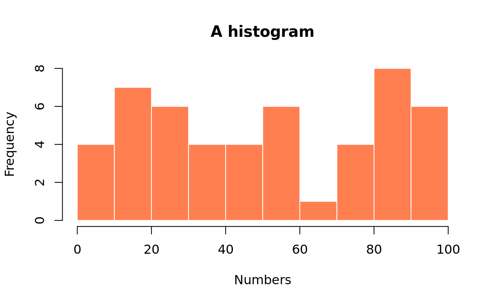
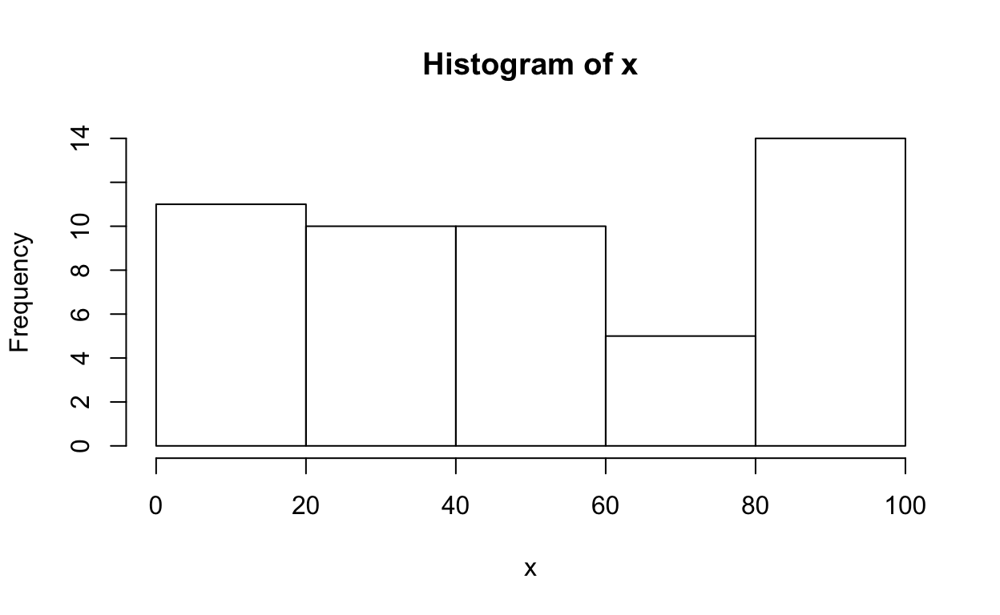
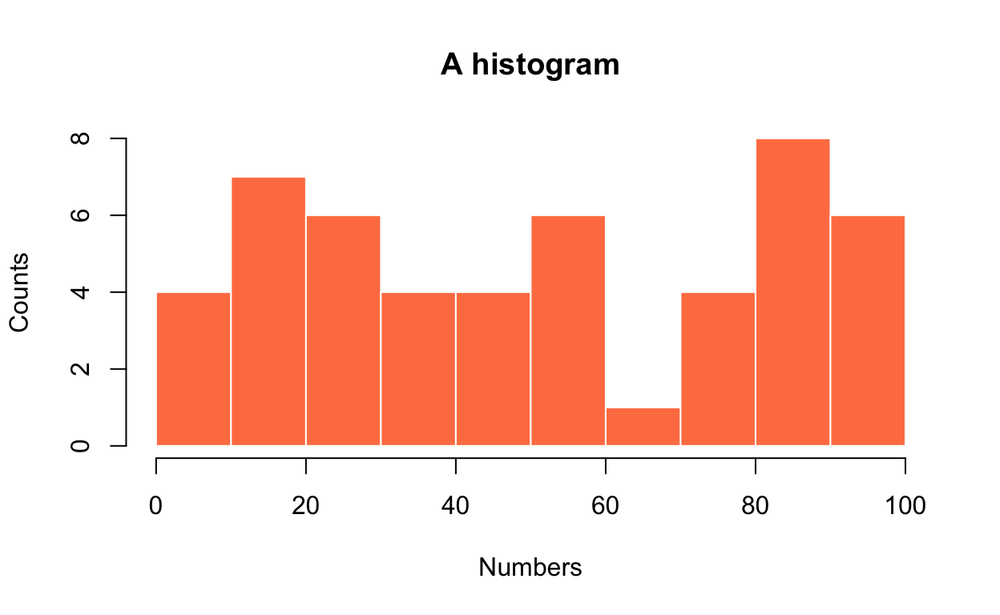
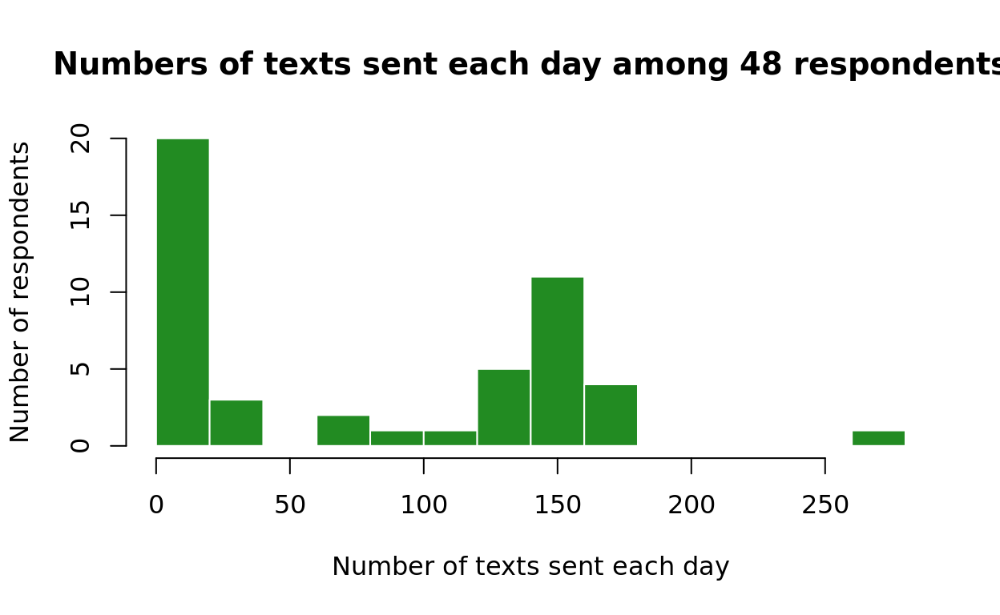

What is a histogram?
“A histogram breaks the range of values of a variable into classes and displays only the count or percent of the observations that fall into each class.” (Moore & McCabe, 2006, p.14)
Let’s create a histogram for the data set below:
26, 98, 37, 59, 45, 28, 51, 57, 86, 97,
9, 94, 16, 22, 10, 36, 85, 60, 53, 82,
11, 84, 78, 4, 20, 71, 72, 49, 14, 100,
83, 31, 54, 29, 81, 27, 34, 50, 19, 17
1. Sort the data
## [1] 1 4 9 10 11 13 14 16 17 19 20 21 22 26 27 28 29
## [18] 31 34 36 37 44 45 49 50 51 53 54 57 59 60 67 71 72
## [35] 78 79 81 82 83 84 85 86 87 88 94 95 97 98 99 1002. Create a class interval frequency table
| intervals | Freq |
|---|---|
| (0,10] | 4 |
| (10,20] | 7 |
| (20,30] | 6 |
| (30,40] | 4 |
| (40,50] | 4 |
| (50,60] | 6 |
| (60,70] | 1 |
| (70,80] | 4 |
| (80,90] | 8 |
| (90,100] | 6 |
3. Draw a bar for each class interval with the bar height indicating the counts of values in the internal 
Common Core Mathematics Standards
CCSS.MATH.CONTENT.6.SP.B.4
Display numerical data in plots on a number line, including dot plots, histograms, and box plots.
CCSS.MATH.CONTENT.HSS.ID.A.1
Represent data with plots on the real number line (dot plots, histograms, and box plots).
References
Moore, D. S. & McCabe, G. P. (2006). Introduction to the Practice of Statistics (5th ed.). New York: W.H. Freeman and Company.
Basic histograms
# Create a variable 'x' and assign it with a set of numbers
x = c(87, 21, 13, 44, 88, 67, 79, 1, 99, 95,
26, 98, 37, 59, 45, 28, 51, 57, 86, 97,
9, 94, 16, 22, 10, 36, 85, 60, 53, 82,
11, 84, 78, 4, 20, 71, 72, 49, 14, 100,
83, 31, 54, 29, 81, 27, 34, 50, 19, 17)
# Create a histogram for the values of variable 'x'
hist(x) # Call the hist() function and apply to variable 'x'
Pretty histograms
Annotated code pattern
# Create a variable 'x' and assign it with a set of numbers
x = c(87, 21, 13, 44, 88, 67, 79, 1, 99, 95,
26, 98, 37, 59, 45, 28, 51, 57, 86, 97,
9, 94, 16, 22, 10, 36, 85, 60, 53, 82,
11, 84, 78, 4, 20, 71, 72, 49, 14, 100,
83, 31, 54, 29, 81, 27, 34, 50, 19, 17)
# Create a histogram for the values of variable 'x'
hist( # Call the hist() function
x, # Apply the function to variable 'x'
breaks = 10, # Set the number of bins to 10. TRY different numbers.
col = "coral", # Set bar color as "coral". TRY "violet" or "skyblue".
border = "white", # Set border color as "white". TRY "lemonchiffon".
xlab = "Numbers", # Label the x-axis. TRY your own label.
ylab = "Counts", # Label the y-axis. TRY your own label.
main = "A histogram") # Create a plot title. Try your own title.Code pattern and output

Code template
Comments
How to
Example 1: Texting by the Numbers
Rachel and her mom each asked 24 of their friends the following question: “What is the average number of texts you SEND each day?” Below are the 48 responses:
0, 2, 3, 3, 5, 5, 5, 5, 5, 5.5, 6, 6, 6, 10, 12, 13, 15, 15, 16, 20, 25, 35, 36, 70, 80, 85, 110, 130, 137, 138, 138, 140, 142, 143, 145, 150, 150, 150, 150, 150, 150, 150, 155, 162, 164, 165, 175, 275
The following R code creates a histogram of this data set:
texts = c(0, 2, 3, 3, 5, 5, 5, 5, 5, 5.5,
6, 6, 6, 10, 12, 13, 15, 15, 16, 20,
25, 35, 36, 70, 80, 85, 110, 130, 137, 138,
138, 140, 142, 143, 145, 150, 150, 150, 150, 150,
150, 150, 155, 162, 164, 165, 175, 275)
hist(texts, breaks = 15, col = "forestgreen", border = "white", xlab = "Number of texts sent each day", ylab = "Number of respondents", main = "Numbers of texts sent each day among 48 respondents")
Source: Secondary Math One - An Integrated Approach by the Mathematics Vision Project (https://www.mathematicsvisionproject.org/)
Example 2: Prime numbers up to 1000
Below are the prime numbers up to 1000:
2, 3, 5, 7, 11, 13, 17, 19, 23, 29, 31, 37, 41, 43, 47, 53, 59, 61, 67, 71, 73, 79, 83, 89, 97, 101, 103, 107, 109, 113, 127, 131, 137, 139, 149, 151, 157, 163, 167, 173, 179, 181, 191, 193, 197, 199, 211, 223, 227, 229, 233, 239, 241, 251, 257, 263, 269, 271, 277, 281, 283, 293, 307, 311, 313, 317, 331, 337, 347, 349, 353, 359, 367, 373, 379, 383, 389, 397, 401, 409, 419, 421, 431, 433, 439, 443, 449, 457, 461, 463, 467, 479, 487, 491, 499, 503, 509, 521, 523, 541, 547, 557, 563, 569, 571, 577, 587, 593, 599, 601, 607, 613, 617, 619, 631, 641, 643, 647, 653, 659, 661, 673, 677, 683, 691, 701, 709, 719, 727, 733, 739, 743, 751, 757, 761, 769, 773, 787, 797, 809, 811, 821, 823, 827, 829, 839, 853, 857, 859, 863, 877, 881, 883, 887, 907, 911, 919, 929, 937, 941, 947, 953, 967, 971, 977, 983, 991, 997
prime = c(2, 3, 5, 7, 11, 13, 17, 19, 23, 29, 31, 37, 41,
43, 47, 53, 59, 61, 67, 71, 73, 79, 83, 89, 97, 101,
103, 107, 109, 113, 127, 131, 137, 139, 149, 151, 157, 163, 167,
173, 179, 181, 191, 193, 197, 199, 211, 223, 227, 229, 233, 239,
241, 251, 257, 263, 269, 271, 277, 281, 283, 293, 307, 311, 313,
317, 331, 337, 347, 349, 353, 359, 367, 373, 379, 383, 389, 397,
401, 409, 419, 421, 431, 433, 439, 443, 449, 457, 461, 463, 467,
479, 487, 491, 499, 503, 509, 521, 523, 541, 547, 557, 563, 569,
571, 577, 587, 593, 599, 601, 607, 613, 617, 619, 631, 641, 643,
647, 653, 659, 661, 673, 677, 683, 691, 701, 709, 719, 727, 733,
739, 743, 751, 757, 761, 769, 773, 787, 797, 809, 811, 821, 823,
827, 829, 839, 853, 857, 859, 863, 877, 881, 883, 887, 907, 911,
919, 929, 937, 941, 947, 953, 967, 971, 977, 983, 991, 997)
hist(prime, breaks = 10, col = "skyblue", border = "white", xlab = "A histogram of prime numbers up to 1000", ylab = "Frequency", main = "Prime numbers")